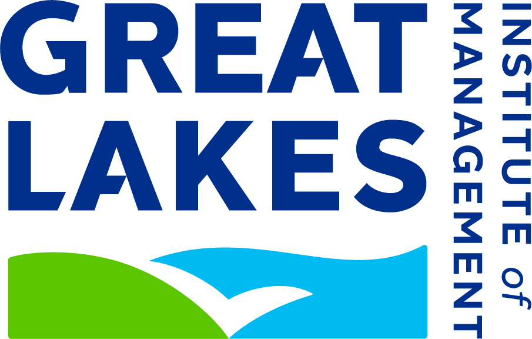
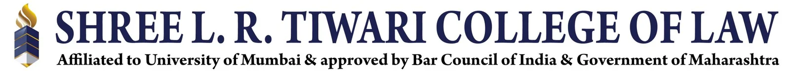
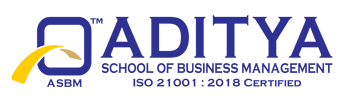
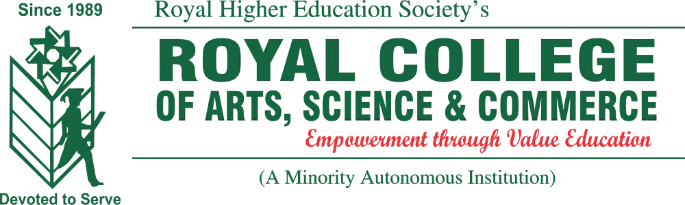

03 / EDUCATION
Built by
many classrooms.
Operations and finance. Law. HR. Commerce. Accounting. A deliberately wide toolkit for a world that refuses to stay in one lane.

THE FLAGSHIP CHAPTER
PGPM
Operations & Finance
Great Lakes Institute of Management, Gurgaon · May 2025 — May 2026
Grade A · Chairman's Merit List holder for Terms 3, 5 and 7.
LLB, Company Law
Shree L. R. Tiwari College of Law
PGDM, Human Resources Management
Aditya Institute of Management Studies & Research
B.Com, HR & Marketing Management
University of Mumbai · Royal College
ICAI CPT
Institute of Chartered Accountants of India
SSC
N.H. English Academy

PGPM · Operations & Finance
LLB · Company Law
PGDM · HR
B.Com · HR & Marketing